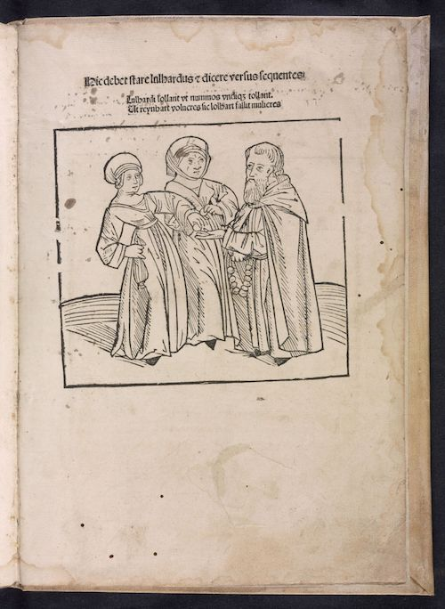

<div>
<table>
	<tr>
		<td>
<p>The final page of Lichtenberger’s text includes a colophon with a date (April 1, 1488) and a reference to the Biblical figure of Ruth, which serves as a pseudonym that Lichtenberger also uses in his preface. This colophon is taken from the first edition (Heidelberg, 1488), and does not reflect the date when this manuscript was copied.</p>
<p>Below this colophon are predictions based on the type of pest seen exiting apples on a tree (a fly signifies war, a spider death), with a rubricated caption for a missing image. The last rubricated caption refers to the closing woodcut image in early editions of Lichtenberger’s text, showing two women giving money to a monk. The original Latin verse, which accuses the Lollards of avarice and deception (“Lulhardi lollant ut nummos undique tollant ut reynhart volucres sic lolhart fallit mulieres”), is rendered in German rhyming couplets.</p>
		</td>
		<td>

<p style="font-size:.8em; text-align:center;">Johannes Lichtenberger, <em>Prognosticatio in Latino</em> (Heidelberg?: 1488), p. 73. Library of Congress, <a href="http://hdl.loc.gov/loc.rbc/Rosenwald.0122.1" target="_blank">http://hdl.loc.gov/loc.rbc/Rosenwald.0122.1</a>.</p>
		</td>
	</tr>
</table>
</div>